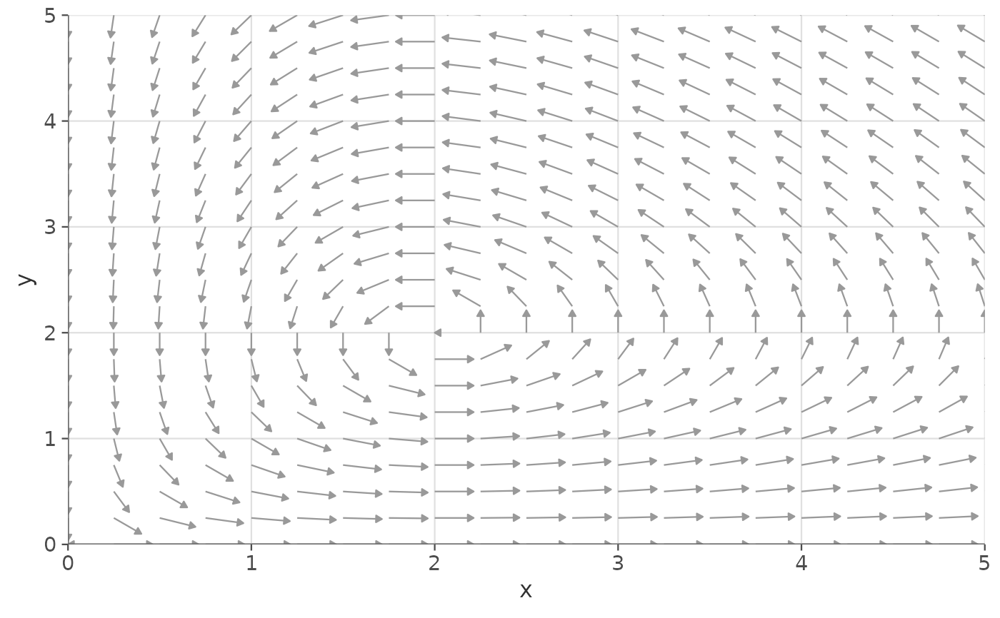
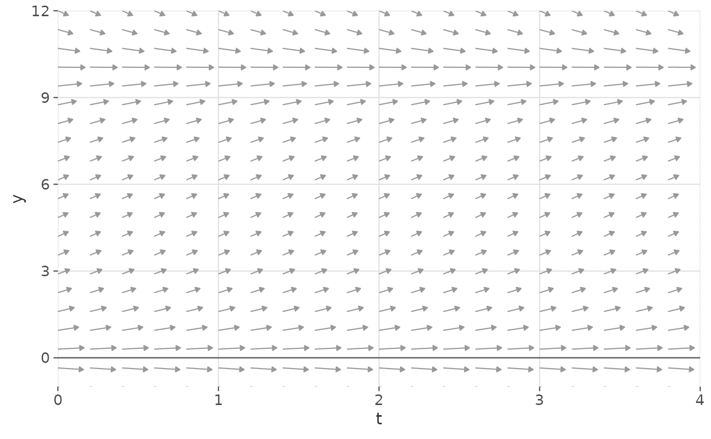
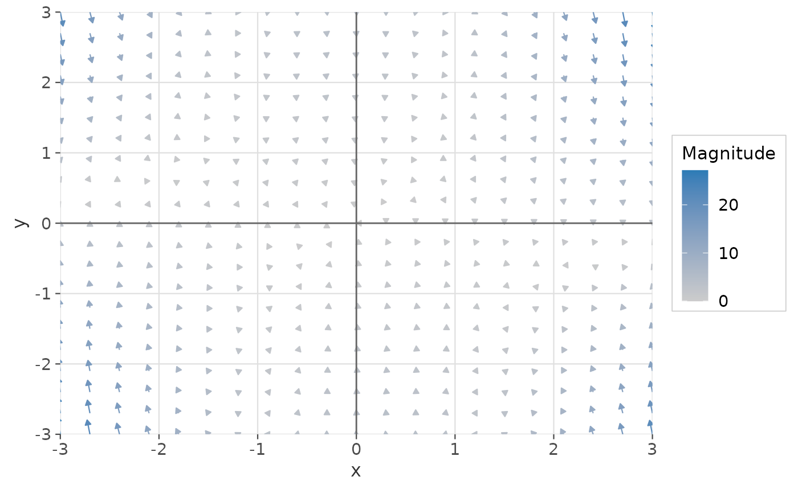
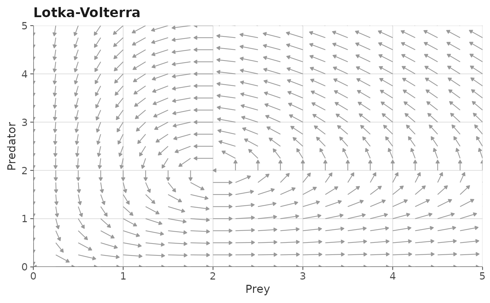

Computes and plots the direction or velocity field of a one- or
two-dimensional autonomous ODE system on a regular grid. Returns a
complete ggplot2::ggplot() object to which additional layers (nullclines,
trajectories, etc.) can be added with +.
Usage
gg_flow_field(
deriv,
xlim,
ylim,
system = c("two.dim", "one.dim"),
parameters = NULL,
n_points = 21L,
arrow_type = c("equal", "proportional"),
arrow_color = "grey60",
arrow_size = 0.25,
arrow_linewidth = 0.4,
arrow_length_scale = 0.85,
max_magnitude = NULL,
color_by_magnitude = FALSE,
magnitude_palette = c("grey80", "#2c7bb6"),
add_origin_lines = TRUE,
origin_line_color = "grey40",
legend_position = "right",
xlab = NULL,
ylab = "y",
title = NULL
)Arguments
- deriv
A function (or named list of functions) describing the ODE system, in either Convention A (
f(t, y, parameters)returninglist(c(...))) or Convention B (simplifiedf(x, y, parameters)returningc(...)). See ggphasr-package for details on ODE conventions.To overlay multiple systems, pass a named list:
deriv = list(system1 = f1, system2 = f2).- xlim
Numeric vector of length 2. Range of the x-axis (or the time axis for 1D systems). Required.
- ylim
Numeric vector of length 2. Range of the y-axis (state variable axis). Required.
- system
Character string:
"two.dim"(default) or"one.dim".- parameters
A numeric vector or list of parameter values passed to
deriv. Whenderivis a list of functions,parameterscan be a named list of parameter vectors, one per system; or a single vector applied to all systems.- n_points
Integer. Number of grid points along each axis. Default:
21(matching phaseR's default).- arrow_type
Character string:
"equal"(default, all arrows the same length, showing direction only) or"proportional"(arrow length proportional to vector magnitude).- arrow_color
Character. Color of the arrows. Default:
"grey60". Ignored whencolor_by_magnitude = TRUE.- arrow_size
Numeric. Relative size of the arrow heads. Default:
0.25.- arrow_linewidth
Numeric. Line width of the arrow shafts. Default:
0.4.- arrow_length_scale
Numeric in (0, 1]. Maximum arrow length as a fraction of the grid cell size. Default:
0.85.- max_magnitude
Numeric or
NULL. Forarrow_type = "proportional"only: if supplied, arrow lengths are scaled relative to this reference magnitude rather than the maximum on the grid. Useful for producing consistent scaling across multiple plots. Default:NULL(auto-scale to grid maximum).- color_by_magnitude
Logical. If
TRUE, arrows are colored by vector magnitude using a continuous color scale. Overridesarrow_color. Default:FALSE.- magnitude_palette
Character vector of length 2. Low and high colors for the magnitude color scale, used when
color_by_magnitude = TRUE. Default:c("grey80", "#2c7bb6").- add_origin_lines
Logical. If
TRUE(default), adds thin reference lines atx = 0andy = 0(ory = 0only for 1D systems) viaggplot2::geom_hline()andggplot2::geom_vline().- origin_line_color
Character. Color of the origin reference lines. Default:
"grey40".- legend_position
Character string or numeric vector of length 2. Controls legend placement when
color_by_magnitude = TRUEor when multiple systems are supplied via a list. One of"right"(default),"left","top","bottom","none","inside", or a numeric vectorc(x, y)with values in[0, 1]for a custom inside position.- xlab
Character. x-axis label. Default:
"x"for 2D systems,"t"for 1D systems.- ylab
Character. y-axis label. Default:
"y".- title
Character or
NULL. Plot title. Default:NULL.
Value
A ggplot2::ggplot() object. Additional layers, scales, and theme
elements can be added with +.
Details
Multiple ODE systems can be overlaid on a single plot by passing a named
list to the deriv argument (see Details and Examples).
ODE conventions
Both phaseR-style (Convention A) and simplified (Convention B) ODE functions are accepted. The calling convention is detected automatically from the function's argument names.
Multiple systems
When deriv is a named list, each system is drawn with a different color
(taken from a discrete palette) and a legend is added automatically.
parameters should then be a named list of the same length as deriv,
with one parameter vector per system. If parameters is a single vector,
it is applied to all systems.
Examples
# 2D system: Lotka-Volterra phase plane
gg_flow_field(
ode_lotka_volterra,
xlim = c(0, 5),
ylim = c(0, 5),
parameters = c(alpha = 1, beta = 0.5, delta = 0.5, gamma = 1)
)

# 1D system: logistic growth phase portrait
gg_flow_field(
ode_logistic,
xlim = c(0, 4),
ylim = c(-1, 12),
system = "one.dim",
parameters = c(r = 1, K = 10)
)

# Proportional arrows colored by magnitude
gg_flow_field(
ode_van_der_pol,
xlim = c(-3, 3),
ylim = c(-3, 3),
parameters = c(mu = 1),
arrow_type = "proportional",
color_by_magnitude = TRUE
)

# Compose with nullclines and a custom title
gg_flow_field(
ode_lotka_volterra,
xlim = c(0, 5),
ylim = c(0, 5),
parameters = c(alpha = 1, beta = 0.5, delta = 0.5, gamma = 1),
title = "Lotka-Volterra"
) +
ggplot2::labs(x = "Prey", y = "Predator")
